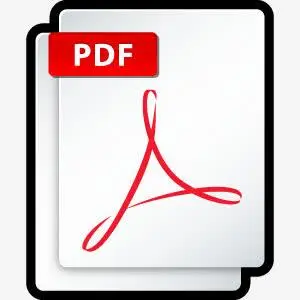

Journal Publications
Y. Jia, K. Liu & X.S. Zhang. “Modulate stress distribution with bio-inspired irregular architected materials towards optimal tissue support” Nature Communications, 15, 4072, 2024.  [pdf]
W. Chen, D. Tong, L. Meng, B. Tan, R. Lan, Q. Zhang, H. Yang, C. Wang, K. Liu. “Knotted artificial muscles for bio-mimetic actuation under deepwater” Advanced Materials, 2400763, 2024. [pdf]
Y. Jia, K. Liu, X. S. Zhang. “Topology optimization of irregular multiscale structures with tunable responses using a virtual growth rule” Computer Methods in Applied Mechanics and Engineering, 116864, 2024. [pdf]
W. Chen, R. Wang, K. Liu. "Active compliant mechanisms for optimized actuation by LCE-based artificial muscles." Mechanics of Materials, 189:104879, 2024. [pdf]
Y. Wang, K. Liu. "Shape optimization of non-rigid origami leading to emerging bistability." Mechanics Research Communications, 132:104165, 2023. [pdf]
K. Liu*, P. P. Pratapa*, D. Misseroni, T. Tachi, G. H. Paulino. “Triclinic metamaterials by tristable origami with reprogrammable frustration” Advanced Materials, 2107998, 2022. [pdf]
K. Liu, R. Sun, C. Daraio. “Growth rules for irregular architected materials with programmable properties” Science 377, 975–981, 2022. [pdf]
D. Misseroni, P. P. Pratapa, K. Liu, G. H. Paulino. “Experimental realization of tunable Poisson’s ratio in deployable origami metamaterials” Extreme Mechanics Letters, 53:101685, 2022. [pdf]
L. Wang, J. Boddapati, K. Liu, P. Zhu, C. Daraio, W. Chen. “Mechanical cloak via data-driven aperiodic metamaterial design” Proceedings of the National Academy of Sciences, 119(13):e2122185119, 2022. [pdf]
P. P. Pratapa, K.Liu, S. P. Vasudevan, G. H. Paulino. “Reprogrammable kinematic branches in tessellated origami structures” Journal of Mechanisms and Robotics, 13(3):031004, 2021. [pdf]
K. Liu, F. Hacker, C. Daraio. “Robotic surfaces with reversible, spatiotemporal control for shape morphing and object manipulation”. Science Robotics, 6:eabf5116, 2021. [pdf] [Supplementary Materials]
K. Liu, T. Tachi, G. H. Paulino. “Bio-inspired Origami metamaterial with metastable phases through mechanical phase transitions”. ASME Journal of Applied Mechanics, 88(9):091002, 2021. [pdf]
K. Liu*, L. Novelino*, P. Gardoni, G. H. Paulino. “Big influence of small random imperfections in origami-based metamaterials”. Proceedings of the Royal Society – A, 476:20200236, 2020. Featured on the cover. [pdf]
K. Liu, T. Tachi, G. H. Paulino. “Invariant and smooth limit of discrete geometry folded from bistable origami leading to multistable metasurfaces”. Nature Communications, 10:4238, 2019. [pdf]
P. P. Pratapa*, K. Liu*, GH Paulino. “Geometric mechanics of origami patterns exhibiting Poisson’s ratio switch by breaking mountain and valley assignment”. Physical Review Letter, 122:155501, 2019. (*co-first author) [pdf]
K. Liu, T. Zegard, P. P. Pratapa, and G. H. Paulino. “Unraveling tensegrity tessellations for metamaterials with tunable stiffness and bandgaps”. Journal of the Mechanics and Physics of Solids, 131:147-166, 2019. [pdf]
K. Liu, G. H. Paulino. “Tensegrity topology optimization by force maximization on arbitrary ground structures”. Structural and Multidisciplinary Optimization, 59(6):2041-2062, 2019. [pdf]
K. Liu, G. H. Paulino. “Nonlinear mechanics of non-rigid origami: An efficient computational approach”. Proceedings of the Royal Society–A. 473:20170348, 2017. [pdf]
E. T. Filipov, K. Liu, T. Tachi, M. Schenk, G. H. Paulino, “Bar and hinge models for scalable analysis of origami”. International Journal of Solids and Structures, 124:26-45, 2017. [pdf]
K. Liu*, J. Wu*, G. H. Paulino, H. J. Qi. “Programmable Deployment of Tensegrity Structures by Stimulus-Responsive Polymers”. Scientific Reports, 7:3511, 2017. In collections: Top 100 in Materials Science，Editor’s choice. (*co-first author). [pdf]
K. Liu, G. H. Paulino, P. Gardoni. “Segmental multi-point linearization for parameter sensitivity approximation in reliability analysis”. Structural Safety, 62:101-115, 2016. [pdf]
K. Liu, G. H. Paulino, P. Gardoni. “Reliability-based topology optimization using a new method for sensitivity approximation - application to ground structures”. Structural and Multidisciplinary Optimization, 54(3):553-571, 2016. [pdf]
Selected Conference Proceedings
K. Liu, M. Kosednar, T. Tachi, G. H. Paulino. “Integrated Origami-String System”. International Design Engineering Technical Conferences and Computers and Information in Engineering Conference, 2019. [pdf]
K. Liu, G. H. Paulino. “Highly efficient nonlinear structural analysis of origami assemblages using the MERLIN2 software”. Origami 7, 4:1167-1182, 2019. [pdf]
K. Liu, G. H. Paulino. “MERLIN: A MATLAB implementation to capture highly nonlinear behavior of non-rigid origami”. Proceedings of the Annual Symposium of the International Association for Shell and Spatial Structures (IASS), 2016. [pdf]